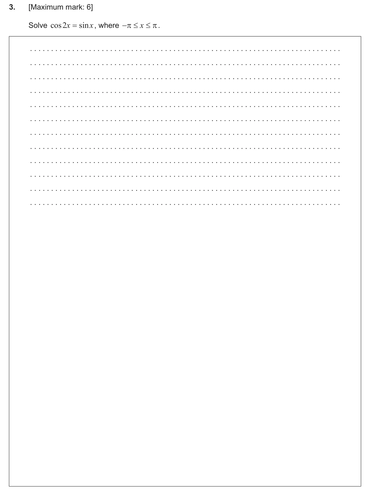
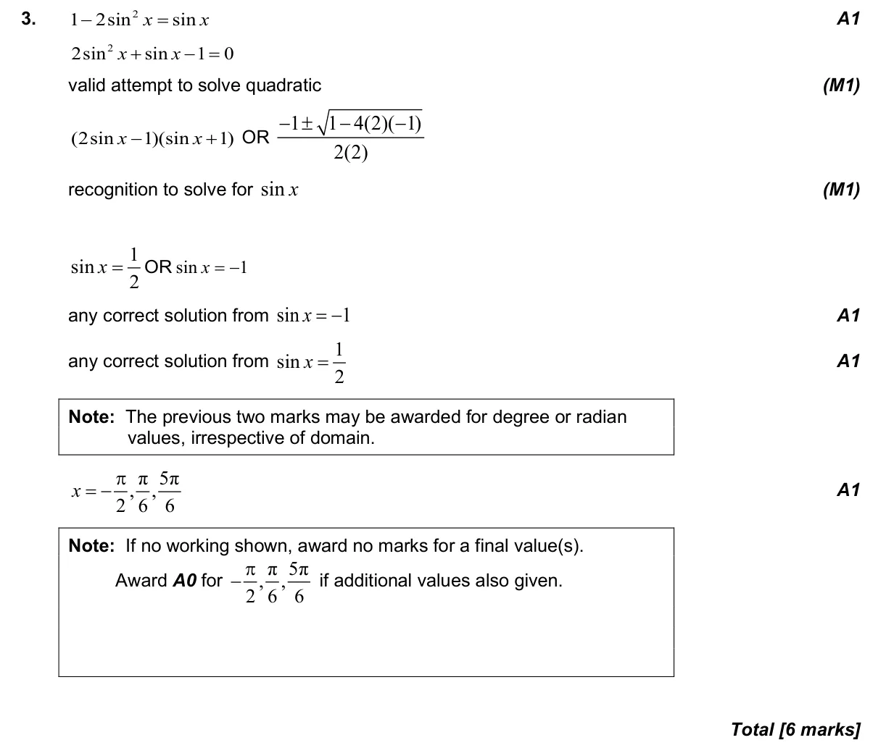

3.8 Solving trigonometric equations3.6 Pythagorean identity and double angles2.7 Solutions of quadratic equations and inequalities, discriminant and nature of roots
Question

Markscheme

6 marks - May P1 TZ1 - Section A - Mathematics: Analysis and Approaches HL

